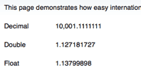
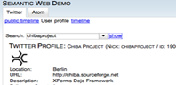

Welcome to the Chiba Demo
The demos are still work in progress and will continously be improved and enhanced.
 |
Widgets form shows all simple XForms UI Controls like input, output, select(1).. |
|  | Chiba 3 is internationalization and localization enabled |
|  | Semantic Web Demo shows how easy XForm Applications can process 3rd party Web 2.0 APIs like Twitter / Atom Feeds ... |